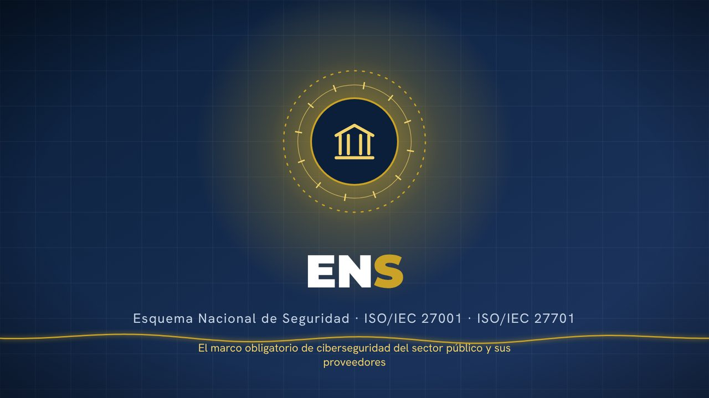

ARG
ARGARGOS › Normativa en 4 minutos › ENS e ISO 27001/27701
El ENS y las ISO 27001 y 27701 en 4 minutos: la llave del mercado público
El Esquema Nacional de Seguridad es el marco obligatorio de ciberseguridad del sector público español y de sus proveedores. Sin certificado, un proveedor queda fuera de muchas licitaciones. Junto a las normas ISO 27001 y 27701 es la referencia más sólida mientras llegan el esquema europeo de nube y la ley española de NIS2.

- 0:00La licitación
- 0:1373 medidas
- 0:33Certificarse
- 0:50ENS
- 1:08Dimensiones
- 1:22Categorías
- 1:40ISO
- 2:01Quién
- 2:23CCN
- 2:43Qué hacer
Datos clave
- 73 medidas de seguridad en el Real Decreto 311/2022.
- Tres categorías: básica (52 medidas y autoevaluación), media (68 medidas, auditoría y certificación) y alta (las 73, con requisitos reforzados).
- Cinco dimensiones fijan la categoría: confidencialidad, integridad, trazabilidad, autenticidad y disponibilidad.
- Validez de dos años; certificarse lleva entre seis y nueve meses.
- Obligatorio para el sector público y para las empresas que desarrollan, mantienen u operan sistemas para él, incluidos los servicios en la nube y de seguridad gestionada.
- Los incidentes se notifican al CCN-CERT; las entidades acreditadas por ENAC emiten las certificaciones de categoría media y alta.
- ISO 27001 es el sistema de gestión de la seguridad de la información; ISO 27701, el de la privacidad.
- El perfil del CCN para NIS2 tiende el puente con Europa.
Transcripción
Texto completo de la locución
0:00 · La licitación
Una licitación pública, un servicio en la nube, una oferta impecable y una línea en el pliego. Tiene certificación ENS?
0:13 · 73 medidas
El Esquema Nacional de Seguridad, el Real Decreto 311/2022, reúne 73 medidas de seguridad. Es obligatorio para todo el sector público y para los proveedores que le prestan servicios o soluciones tecnológicas. Sin certificado, el proveedor queda fuera de muchas licitaciones.
0:33 · Certificarse
Y la certificación no es un trámite. Hay que categorizar cada sistema según su impacto, hacer el análisis de riesgos, justificar cada medida en la declaración de aplicabilidad, superar la auditoría de una entidad acreditada y renovarla cada dos años.
0:50 · ENS
El ENS es el marco obligatorio de ciberseguridad del sector público español y de sus proveedores. Junto a las normas ISO 27001 y 27701 es la referencia más sólida, mientras llegan el esquema europeo de nube y la ley española de NIS2.
1:08 · Dimensiones
La categoría se fija por el impacto en cinco dimensiones. Confidencialidad, integridad y trazabilidad, autenticidad y disponibilidad. Y los incidentes se notifican al CCN-CERT.
1:22 · Categorías
Tres categorías. Básica, 52 medidas y autoevaluación. Media, 68 medidas con auditoría y certificación. Alta, las 73, con requisitos reforzados. Y perfiles específicos, como el que encaja NIS2.
1:40 · ISO
Y para el mercado privado, las normas ISO. ISO 27001, el sistema de gestión de la seguridad de la información. ISO 27701, la gestión de la privacidad. El certificado ENS tiene una validez de dos años. Y certificarse lleva entre seis y nueve meses.
2:01 · Quién
¿Quién debe cumplirlo? El Estado, las comunidades autónomas y las entidades locales, los organismos públicos y las universidades públicas. Las empresas que desarrollan, mantienen o operan sistemas para el sector público. Los servicios en la nube que soportan procesos o datos públicos. Y los servicios gestionados de seguridad.
2:23 · CCN
Detrás está el Centro Criptológico Nacional, con su equipo de respuesta, el CCN-CERT. Publica las guías de seguridad y el catálogo de productos cualificados. Las entidades acreditadas por ENAC emiten las certificaciones de categoría media y alta. Y su perfil para NIS2 tiende el puente con Europa.
2:43 · Qué hacer
¿Qué hacer? Categorizar ya, certificar en seis a nueve meses y renovar cada dos años, vigilando dónde están los datos de categoría alta. ARGOS mantiene la declaración de aplicabilidad y el registro de evidencias y lo cruza con NIS2, el RGPD y el reglamento de IA para no duplicar trabajo. ENS, la llave del mercado público.
Preguntas frecuentes
¿Quién debe cumplir el ENS?
El Estado, las comunidades autónomas, las entidades locales, los organismos públicos y las universidades públicas, y también las empresas que desarrollan, mantienen u operan sistemas para el sector público, los servicios en la nube que soportan procesos o datos públicos y los servicios gestionados de seguridad.
¿Cuántas medidas tiene el ENS?
73 medidas de seguridad. La categoría básica aplica 52 con autoevaluación; la media, 68 con auditoría y certificación; y la alta, las 73 con requisitos reforzados.
¿Cuánto tarda y cuánto dura la certificación ENS?
Certificarse lleva entre seis y nueve meses y el certificado tiene una validez de dos años. Hay que categorizar cada sistema, hacer el análisis de riesgos, justificar cada medida en la declaración de aplicabilidad y superar la auditoría de una entidad acreditada por ENAC.
¿Qué diferencia hay entre el ENS y la ISO 27001?
El ENS es obligatorio para el sector público español y sus proveedores; la ISO 27001 es la norma internacional de gestión de la seguridad de la información, la referencia en el mercado privado. La ISO 27701 añade la gestión de la privacidad.
¿El ENS ayuda a cumplir NIS2?
Sí. El Centro Criptológico Nacional publicó un perfil para encajar NIS2 en el ENS, y su categoría alta cubre buena parte de las medidas de la directiva.
Fuentes oficiales
- Real Decreto 311/2022, por el que se regula el Esquema Nacional de Seguridad (BOE)
- CCN-CERT: Esquema Nacional de Seguridad
- ISO/IEC 27001 (ISO)
- ISO/IEC 27701 (ISO)
Sigue con
 RGPD y LOPDGDD
RGPD y LOPDGDDEl RGPD y la LOPDGDD en 4 minutos: qué exigen hoy y qué se sanciona en España
 Reglamento de IA
Reglamento de IAEl Reglamento de IA en 4 minutos: niveles de riesgo, fechas tras el Ómnibus y qué hacer en España
 NIS2
NIS2NIS2 en 4 minutos: qué exige, multas, fechas y la situación singular de España
Locución y música generadas con inteligencia artificial (art. 50 del Reglamento de IA). Información general, no constituye asesoramiento jurídico; situación a noviembre de 2026, según las fichas de regulación de Software in a Box. Clips de vídeo con licencia de Envato.
Para incrustar esta presentación en otra web: <iframe src="https://argos.softwareinabox.eu/normativa/ens-iso-27001/presentacion/?embed=1" width="960" height="540" allow="autoplay; fullscreen" title="El ENS y las ISO 27001 y 27701 en 4 minutos: la llave del mercado público"></iframe> con un enlace a esta página.
También disponible en: DeutschFrançaisFrançais (Belgique)ItalianoNederlandsNederlands (België)PortuguêsDansk